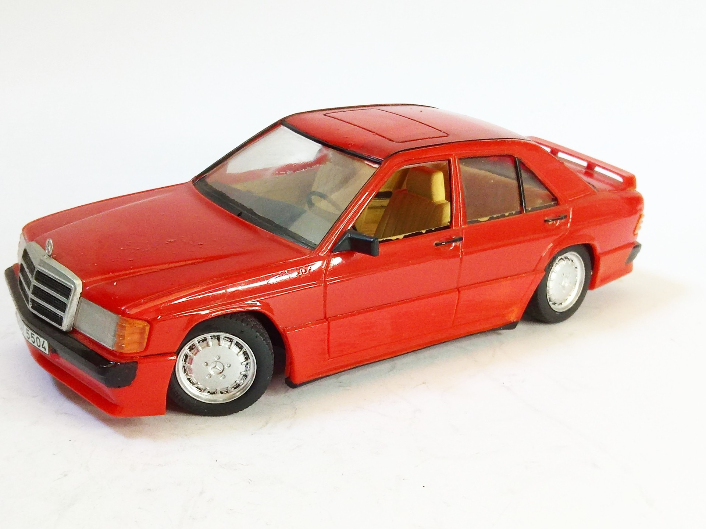
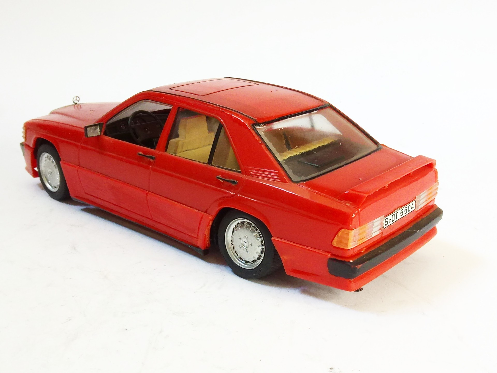
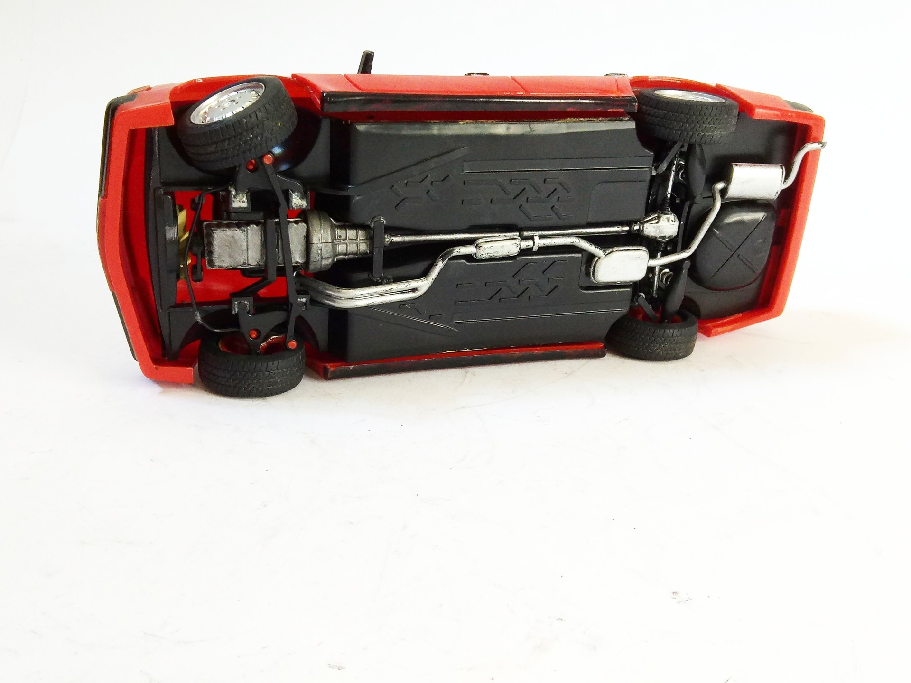

Auto e veicoli stradali · scale model archive
Mercedes Benz 190E 2.3 16 valves
Mercedes Benz 190E 2.3 16 valves — Kit: ESCI, Scale: 1/24. The car was a sensation when launched #1/24 #ESCI

Photo gallery


English description
The car was a sensation when launched
#1/24 #ESCI
Descrizione italiana
Il auto fu una sensation when launched.